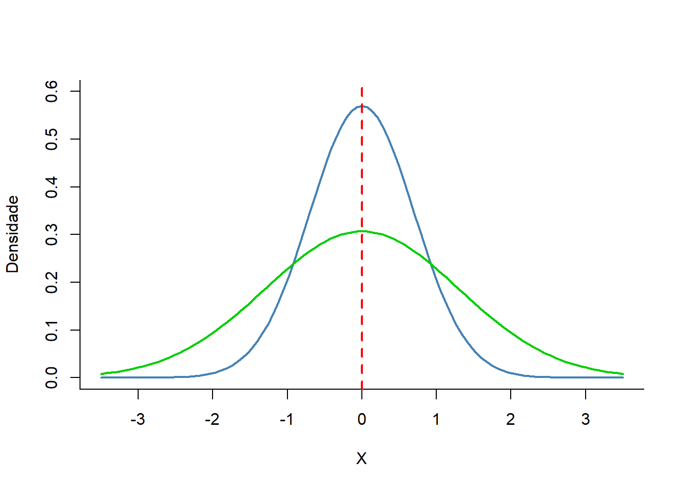

|
|
|
|
|
|
|---|---|---|---|---|---|
2,940 | 3,575 | 3,150 | 3,545 | 3,365 | 2,825 |
3,060 | 2,580 | 3,110 | 2,415 | 4,670 | 3,670 |
1,930 | 3,000 | 3,115 | 2,850 | 2,490 | 1,465 |
2,790 | 4,445 | 3,290 | 3,215 | 3,245 | 3,420 |
1,750 | 2,925 | 3,345 | 1,105 | 3,445 | 3,150 |
6 Medidas Resumidoras
6.1 Dados brutos
Habitualmente, costuma-se armazenar os dados em bancos de dados (dataframes ou tibbles). Entretanto, eles estão registrados de forma aleatória e não classificada. Ao se visualizar um dataframe, é difícil responder perguntas em relação a qualquer variável, principalmente, em grandes bancos de dados. Eles se constituem uma lista, um rol de valores colocados na ordem em que foram obtidos. Parecem um jogo de quebra cabeça antes de ser organizado! A Tabela 6.1 é o tipo mais simples de tabela possível. Nela é apresentado um conjunto de dados, os valores dos pesos de 30 recém-nascidos. Não há nenhum significado especial para as linhas e colunas, estão dispostos da maneira como coletados. Eles pouco informam; são apenas os dados na sua forma inicial sem nenhum tratamento ou ordem. São denominados como dados brutos e se constituem no ponto de partida para uma análise. Quando colocados em ordem crescente, permitindo uma compreensão inicial, são chamados de dados não agrupados; quando classificados em categorias ou intervalos, são denominados dados agrupados.
6.2 Introdução
Nos relatórios ou artigos científicos, a comunicação dos resultados é feita através da combinação de medidas resumidoras e visualização dos dados por meio de tabelas e gráficos, constituindo o que se costuma chamar de Estatística Descritiva. Neste capítulo, serão discutidas as principais medidas resumidoras dos dados de duas maneiras:
- Primeiro, um valor em torno do qual os dados têm uma tendência para se reunir ou se agrupar, denominado de medida de tendência central. Relacionadas a elas estão as medidas de posição (ou de localização), como os quantis, que situam um valor dentro do conjunto ordenado de dados; apenas uma delas, a mediana, é também uma medida de tendência central.
- Em segundo lugar, um valor que mede o grau em que os dados se dispersam, denominado de medida de dispersão ou variabilidade.
Nos próximos capítulos, desta Parte III, estarão em discussão a construção de Tabelas (Capítulo 7) e visualização dos dados através de gráficos (Capítulo 8).
6.3 Dados usados neste capítulo
Para as demonstrações práticas, será usado o banco de dados dadosMater.xlsx (ver Seção 5.6). Após carregá-lo, serão filtrados os partos a termo e selecionadas as variáveis necessárias (idade_mae, anos_est, peso_rn, apgar1). Por último, será extraída com a função slice_sample() do pacote dplyr (Seção 5.5) uma amostra de n = 200. Cada vez que este comando for reproduzido, retornará uma nova série de 200 valores, diferente da anterior. Para tornar o código reproduzível, retornando o mesmo conjunto de valores, deve-se usar uma “semente” (seed), usando a função set.seed(), cujo argumento é um número que identificará a série gerada. Após extrair a amostra, esta será atribuída a um objeto denominado, dados:
library(dplyr)
set.seed(123)
dados <- readxl::read_excel("dados/dadosMater.xlsx") |>
filter(ig >= 37 & ig < 42) |>
select(idade_mae, anos_est, peso_rn, apgar1) |>
slice_sample(n=200)6.4 Medidas de tendência central
6.4.1 Média
A média (\(\overline{x}\)) é a mais usada medida de tendência central para representar um valor típico dentro de um conjunto de números. O conceito mais comum é a média aritmética, que se calcula somando todos os valores do conjunto e dividindo pelo número total de elementos. A média é mais adequada para medidas numéricas simétricas, pois ela é sensível aos valores extremos (outliers).
\[\overline{x}= \frac{\sum_{i=1}^{n} x_i}{n}\]
O R base possui uma função para o cálculo da média, mean(), apresentada na Seção 4.4, onde foi mostrado os seus argumentos. Se a variável analisada contiver algum valor ausente (missing), deve-se usar o argumento na.rm = TRUE, para removê-los, pois, caso contrário, a função retorna um resultado como NA (Not Available). Para evitar transtornos, recomenda-se usar sempre o argumento.
mean (dados$peso_rn, na.rm = TRUE)[1] 3228.095Para reduzir o número de dígitos decimais, na saída do resultado, pode-se colocar a função mean(), dentro da função round()1, atribuindo o resultado da função a um objeto, por exemplo media.
1 Usa-se esta sintaxe: round(x, digits = 0), onde x é o numero que se quer arredondar e digits é número de casas decimais. O padrão é 0, ou seja, arredonda para o inteiro mais próximo.
media <- round(mean (dados$peso_rn, na.rm = TRUE), 1)
print(media)[1] 3228.1Ou, usar a função round(), separadamente:
media <- mean (dados$peso_rn, na.rm = TRUE)
round(media, 1)[1] 3228.16.4.2 Mediana
A mediana (Md) representa o valor central em uma série ordenada de valores. Assim, metade dos valores será igual ou menor que o valor mediano e a outra metade igual ou maior do que ele. Para encontrar a mediana procede-se da seguinte maneira:
- Ordenar o conjunto de dados, por exemplo, a variável
dados$peso_rn, usando a funçãosort():
valores_ordenados <- sort(dados$peso_rn)
print(valores_ordenados) [1] 2170 2300 2309 2310 2405 2480 2485 2570 2590 2590 2640 2650 2650 2650 2680
[16] 2680 2705 2710 2720 2725 2730 2750 2770 2770 2775 2775 2775 2780 2780 2795
[31] 2795 2800 2830 2850 2850 2855 2865 2870 2870 2870 2870 2870 2875 2885 2890
[46] 2910 2910 2910 2920 2935 2940 2965 2965 2970 2980 2980 2980 2990 2990 2995
[61] 3005 3010 3015 3030 3030 3030 3040 3040 3055 3060 3075 3080 3085 3090 3100
[76] 3100 3105 3115 3115 3120 3140 3145 3145 3150 3150 3150 3150 3150 3155 3160
[91] 3160 3165 3170 3170 3180 3180 3185 3190 3190 3200 3200 3205 3215 3220 3240
[106] 3260 3270 3270 3270 3270 3270 3275 3280 3280 3295 3300 3305 3305 3315 3320
[121] 3320 3330 3335 3335 3355 3360 3375 3380 3380 3385 3385 3385 3390 3390 3390
[136] 3395 3395 3400 3415 3420 3425 3430 3430 3430 3460 3460 3470 3480 3480 3495
[151] 3500 3500 3505 3515 3520 3535 3540 3540 3540 3550 3550 3550 3570 3580 3580
[166] 3580 3590 3625 3630 3635 3640 3645 3650 3660 3665 3675 3695 3715 3715 3715
[181] 3715 3740 3780 3780 3825 3830 3830 3840 3840 3850 3855 3880 3970 4045 4050
[196] 4240 4305 4380 4485 4535- Quando o número de valores é par, caso do exemplo, a mediana é a média dos dois valores do meio, ou seja, o valor central corresponde a média do valor 100 e do valor 101 dos valores ordenados:
mediana = (valores_ordenados[100] + valores_ordenados[101])/2
print(mediana)[1] 3200- Quando o número de valores no conjunto de dados for ímpar, a mediana é o valor do meio.
- No exemplo, tem-se 200 valores. Para transformar a amostra em uma amostra com n ímpar, remover aleatoriamente uma observação dos valores dos
dados$peso_rn:
set.seed(234)
index_aleatorio <- sample(length(dados$peso_rn), 1)
index_aleatorio[1] 31- Ou seja, o valor selecionado é o 31º valor. A seguir, obtem-se o peso aleatório que foi selecionado:
peso_aleatorio <- dados$peso_rn[index_aleatorio]
peso_aleatorio[1] 2720- Remover o 31º valor (index_aleatório) da lista de
dados$peso_rnque corresponde ao peso selecionado:
pesos_restantes <- dados$peso_rn[-index_aleatorio]- Colocar os pesos_restantes em ordem crescente:
restantes_ordenados <- sort(pesos_restantes)
print(restantes_ordenados) [1] 2170 2300 2309 2310 2405 2480 2485 2570 2590 2590 2640 2650 2650 2650 2680
[16] 2680 2705 2710 2725 2730 2750 2770 2770 2775 2775 2775 2780 2780 2795 2795
[31] 2800 2830 2850 2850 2855 2865 2870 2870 2870 2870 2870 2875 2885 2890 2910
[46] 2910 2910 2920 2935 2940 2965 2965 2970 2980 2980 2980 2990 2990 2995 3005
[61] 3010 3015 3030 3030 3030 3040 3040 3055 3060 3075 3080 3085 3090 3100 3100
[76] 3105 3115 3115 3120 3140 3145 3145 3150 3150 3150 3150 3150 3155 3160 3160
[91] 3165 3170 3170 3180 3180 3185 3190 3190 3200 3200 3205 3215 3220 3240 3260
[106] 3270 3270 3270 3270 3270 3275 3280 3280 3295 3300 3305 3305 3315 3320 3320
[121] 3330 3335 3335 3355 3360 3375 3380 3380 3385 3385 3385 3390 3390 3390 3395
[136] 3395 3400 3415 3420 3425 3430 3430 3430 3460 3460 3470 3480 3480 3495 3500
[151] 3500 3505 3515 3520 3535 3540 3540 3540 3550 3550 3550 3570 3580 3580 3580
[166] 3590 3625 3630 3635 3640 3645 3650 3660 3665 3675 3695 3715 3715 3715 3715
[181] 3740 3780 3780 3825 3830 3830 3840 3840 3850 3855 3880 3970 4045 4050 4240
[196] 4305 4380 4485 4535- Cálculo da mediana com os valores restantes ordenados. O valor central entre 1 e 199 é o 100º valor:
mediana <- restantes_ordenados[100]
mediana[1] 3200Imaginem que sempre que se for calcular a mediana houvesse necessidade de se proceder como realizado acima. Seria tedioso, quase um caos! Entretanto, usando o R, a situação fica bem mais agradável e intuitiva. O R facilita esse trabalho, fornecendo a função median().
Como exemplo, será usada a variável apgar1 já incluída no dataframe dados. Como o Apgar é um escore (1), a medida resumidora mais adequada, realmente, é a mediana.
median (dados$apgar1, na.rm = TRUE)[1] 8
Exercício
Calcular a mediana dos valores dados$peso_rn.
Resposta
median(dados$peso_rn, na.rm=TRUE)[1] 32006.4.3 Moda
Moda (Mo) é o valor que ocorre com maior frequência em um conjunto de dados. O R não possui uma função nativa e direta para calcular a moda como tem para a média (mean()) e a mediana (median()). Isso acontece porque a moda pode não ser única em um conjunto de dados (podem existir múltiplos valores com a mesma frequência máxima) ou pode nem existir (se todos os valores ocorrerem apenas uma vez). É a medida de tendência central com o menor nível de sofisticação estatística. No entanto, pode-se facilmente criar uma função própria para calcular a moda ou usar pacotes que oferecem essa funcionalidade, como o DescTools que oferece uma função chamada Mode(). Aqui estão algumas maneiras de calcular a moda em R:
Função personalizada
moda <- function(v) {
freq_tab <- table(v)
max_freq <- max(freq_tab)
moda <- names(freq_tab[freq_tab == max_freq])
return(moda)
}Esta função moda()é constituída por:
- table(v): Cria uma tabela de frequência dos valores v.
- max(freq_tab): Encontra a frequência máxima.
- freq_tab[freq_tab == max_freq]: Seleciona as entradas da tabela de frequência que são iguais à frequência máxima.
- names(…): Obtém os nomes (os valores originais) dessas entradas, que são as modas.
Usando a função criada, a moda da variável dados$apgar1 é igual a:
moda (dados$apgar1) [1] "9"A função moda() pode ser salva em seu diretório de trabalho, na pasta das suas funções próprias. Quando necessário ela pode ser acessada, como foi visto na Seção 4.4.1.
Função Mode() do pacote DescTools
library(DescTools)
moda <- Mode(dados$apgar1)
print(moda)[1] 9
attr(,"freq")
[1] 836.4.4 Quantil
Os quantis são uma medida de posição (ou de localização) bastante utilizada: pontos estabelecidos em intervalos regulares que dividem a amostra em subconjuntos iguais. Diferentemente das medidas de tendência central, os quantis, isoladamente, não indicam um valor típico do conjunto de dados, mas sim a posição relativa de um valor dentro da distribuição ordenada. A mediana (o quantil 50%) é a única exceção: além de ser uma medida de posição, ela também é uma medida de tendência central (ver Seção 6.4.2), pois representa o valor central da distribuição.
Se estes subconjuntos são em número de 100, são denominados de percentis; se são em número de 10, são os decis e em número de 4, são os quartis. A função nativa no R para obter o quantil é quantile().
Para determinar os três quartis do peso dos recém-nascidos (dados$peso_rn), usa-se:
quantile (dados$peso_rn, c (0.25, 0.50, 0.75)) 25% 50% 75%
2938.75 3200.00 3496.25 Observe que o percentil 50º é igual a mediana. O percentil 75º é o ponto do conjunto de dados onde 75% dos recém-nascidos têm um peso inferior a 3496.25g e 25% está acima deste valor.
6.4.5 Média aparada
As médias aparadas são estimadores robustos da tendência central. Para calcular uma média aparada, é removida uma quantidade predeterminada de observações em cada lado de uma distribuição e realizada a média das observações restantes. Um exemplo de média aparada é a própria mediana.
A base R tem como calcular a média aparada acrescentando o argumento trim =, proporção a ser aparada. Se for aparado 20%, usa-se trim = 0.2. Isto significa que serão removidos 20% dos dados dos dois extremos. No caso da amostra de 200 recém-nascidos, serão removidos 40 valores mais baixos e 40 valores mais altos, passando a amostra a ter 120 valores, e a média aparada será a média destes 120 valores.
O comando para obter a média aparada é:
round(mean (dados$peso_rn, na.rm = TRUE, trim = 0.20), 1)[1] 3216.76.5 Medidas de Dispersão
6.5.1 Amplitude
A amplitude de um grupo de medições é definida como a diferença entre a maior observação e a menor.
No conjunto de dados dos pesos dos recém-nascidos, a amplitude pode ser obtida, no R, com a função range(), que retorna o valor mínimo e o máximo.
range (dados$peso_rn, na.rm = TRUE)[1] 2170 45356.5.2 Intervalo Interquartil
O intervalo interquartil (IIQ), também conhecido como amplitude interquartil (AIQ), é uma medida de dispersão robusta análoga a uma amplitude aparada: assim como a média aparada exclui os valores mais extremos antes de calcular a média, o IIQ exclui os 25% de valores mais baixos e os 25% mais altos antes de medir a dispersão dos valores restantes. É simplesmente a diferença entre o terceiro e o primeiro quartil, ou seja, a diferença entre o percentil 75 e o percentil 25. Considere a variável escolaridade (dados$anos_est), anos de estudos completos.
Os percentis 25 e 75 são obtidos, usando a função quantile(), vista acima, ou com a função summary(), que retorna os valores mínimo, primeiro quartil, mediana, média, terceiro quartil e máximo.
quantile (dados$anos_est, c(0.25,0.75))25% 75%
6 10 summary(dados$anos_est) Min. 1st Qu. Median Mean 3rd Qu. Max.
0.00 6.00 8.00 7.61 10.00 17.00 Portanto, o IIQ está entre 6 a 10 anos de estudo ou, 4 anos de estudos completos. Em outras palavras, 50% das mulheres desta amostra têm entre 6 a 10 anos de estudo.
O R possui uma função específica para calcular o intervalo interquartil, denominada IQR() e incluída no R base. Ela possui os seguintes argumentos:
x \(\to\) Representa o vetor numérico;
na.rm \(\to\) Este assume um valor lógico, TRUE ou FALSE, indicando se os valores ausentes devem ser removidos ou não;
type \(\to\) Representa um número inteiro selecionando um dos muitos algoritmos de quantil. Este é um parâmetro opcional.
IQR(dados$anos_est, na.rm = TRUE)[1] 46.5.3 Variância e Desvio Padrão
A variância e o desvio padrão fornecem uma indicação de quão aglomerados em torno da média os dados de uma amostra estão. Estes tipos de medidas representam desvios (erros) da média. Quando se verifica o desvio de cada valor (x) em relação à média \(\overline{x}\), os desvios positivos se anulam com os negativos, resultando em uma soma igual a zero.
A consequência deste fato é que não é possível resumir os desvios numa única medida de variabilidade. Para se chegar a uma medida de variabilidade há necessidade de se eliminar os sinais, antes de somar todos os desvios em relação à média.
Uma maneira de se fazer isso é elevar todas as diferenças ao quadrado. Assim, se obtém o desvio em relação à média elevado ao quadrado. A soma destes valores é denominada de Soma dos Quadrados (SQ) dos Desvios ou Soma dos Erros ao Quadrado. Se o interesse é apenas saber o erro ou desvio médio, divide-se por n (tamanho da amostra). No entanto, em geral o interesse se concentra em usar o desvio ou erro na amostra para estimar o erro na população. Dessa maneira, divide-se a Soma dos Quadrados por \(n-1\). Essa medida é conhecida como variância (\(s^2\)). O divisor, \(n – 1\), é denominado de graus de liberdade (gl) associados à variância.
Os graus de liberdade representam o número de desvios que estão livres para variar. É um conceito de difícil explicação, mas é possível compreendê-lo, usando a seguinte explicação:
Graus de liberdade
Suponha uma maternidade há 50 anos atrás, quando não havia alojamento conjunto. Nessa época era comum os recém-nascidos normais ficarem em um berçário. A cada horário de amamentação eles eram levados para os quartos de suas mães para mamar. Posteriormente, eram trazidos para o berçário e colocados nos berços até a próxima mamada. Suponha que, em um determinado momento, havia 15 bebês e que, no berçário, existiam 15 berços (postos) para colocá-los durante o intervalo das mamadas. Quando o primeiro recém-nascido chega, a enfermeira poderá escolher qualquer um dos berços para o colocar. Depois, quando o próximo recém-nascido chegar, ela terá 14 opções de escolha, pois um dos berços está ocupado. Ainda existe uma boa liberdade de escolha. No entanto, à medida que os recém-nascidos forem sendo trazidos para o berçário, chegará a um ponto em que 14 berços estarão ocupados. Agora, a enfermeira não terá liberdade de escolha, pois só resta um berço. Nesse exemplo existem 14 graus de liberdade (gl)2. Para o último recém-nascido não houve liberdade de escolha (2). Portanto, os graus de liberdade são iguais ao tamanho da amostra menos um (\(n-1\)).
2 No texto deste livro, graus de liberdade são abreviados por gl. Muitas vezes, é usado a abreviação df de degree of freedom porque em algumas funções aparecem como df e optou-se por manter sem a tradução.
A variância é a razão entre a soma dos quadrados e os graus de liberdade (observações realizadas menos um).
\[s^2= \frac{\sum(x_i - \overline{x})^2}{n-1}\]
No R existem embutidas as funções sd() e var()que facilmente calculam essas medidas de dispersão.
Usando a variável dados$peso_rn, tem-se:
var(dados$peso_rn, na.rm =TRUE)[1] 169623.2O desvio padrão é a raiz quadrada da variância: \[s = \sqrt{s^2}\]
sqrt (var(dados$peso_rn))[1] 411.8534Ou, usando a função sd() e arredondando para 1 dígito decimal:
round(sd (dados$peso_rn, na.rm = TRUE), 1)[1] 411.9A variância e desvio padrão são medidas de variabilidade e revelam quão bem a média representa os dados. Informa se ela está funcionando bem como modelo. Pequenos desvios padrão mostram que existe pouca variabilidade nos dados, que eles se aproximam da média. Quando existe um grande desvio padrão, a média não é muito precisa para representar os dados.
O desvio padrão, além de medir a precisão com que a média representa os dados, também informa sobre o formato dos dados e por isso é uma medida de dispersão. Em uma amostra onde desvio padrão é pequeno, os dados se agrupam próximo a média e o formato da distribuição fica mais pontiagudo (curva em azul, Figura 6.1). Nesse caso a média representa bem os dados. Em outra amostra, com a mesma média anterior, mas com os dados mais dispersos entorno da média, o desvio padrão é maior e o formato da distribuição fica achatado (curva verde, na Figura Figura 6.1). Nesse caso a média não é uma boa representação dos dados.

6.5.4 Coeficiente de Variação
O desvio padrão por si só tem limitações. Um desvio padrão igual a 2 pode ser considerado pequeno para um conjunto de valores cuja média é 100. Entretanto, se a média for 5, ele se torna muito grande. Além disso, o desvio padrão por ser expresso na mesma unidade dos dados, não permite aplicá-lo na comparação de dois ou mais conjunto de dados que têm unidades diferentes. Para eliminar essas limitações, é possível caracterizar a dispersão ou variabilidade dos dados em termos relativos, usando uma medida denominada Coeficiente de Variação (CV), também conhecido como Desvio Padrão Relativo ou Coeficiente de Variação de Pearson. É expresso, em geral como uma porcentagem, sendo definido como a razão do desvio padrão pela média:
\[CV = \frac{s}{\overline{x}}\]
Multiplicando o valor da equação por 100 tem-se o CV percentual. O R não possui uma função específica para calcular o CV.
Foi criada uma função específica para isso, já multiplicada por 100 (ver Seção 4.4.1). Será repetida aqui a função para facilitar a visualização:
coefVar <- function (x) {
return (sd(x, na.rm=TRUE) / mean(x, na.rm=TRUE)*100)
}Portanto, o CV da variável dados$peso_rn é igual a:
round(coefVar(dados$peso_rn), 1)[1] 12.8Usando outra variável do banco de dados, por exemplo, dados$idade_mae, o CV será igual a:
round(coefVar(dados$idade_mae), 1)[1] 25.4O peso do recém-nascido tem um CV = 12.8 % e a idade materna um CV = 25.4 %, mostrando que esta tem uma maior variabilidade. Quanto menor o desvio padrão, menor o CV e, consequentemente, menor a variabilidade. Um CV \(\ge\) 50%, sugere que a variável tem uma distribuição assimétrica.
6.5.5 Escolha da medida resumidora
A seleção da medida de tendência central mais adequada depende de vários fatores, incluindo a natureza dos dados e do propósito da sumarização.
O tipo da variável tem substancial influência na escolha da medida de tendência central a ser usada. A moda é mais apropriada para dados nominais e seu uso com variáveis ordinais resulta em uma perda no poder em termos de informação que se poderia obter dos dados.
A mediana é mais adequada para variáveis ordinais, embora possa ser usada para variáveis contínuas, especialmente quando a distribuição dos dados é assimétrica. A mediana não deveria ser usada com dados nominais porque os postos assumidos não podem ser obtidos com dados de nível nominal.
Finalmente, a média somente deve ser usada com dados contínuos simétricos, se houver assimetria a mediana deve ser preferida.
As medidas de dispersão devem estar associadas a uma medida de tendência central. Elas caracterizam a variabilidade dos dados na amostra. Com dados ordinais usar a amplitude ou o intervalo interquartil. O desvio padrão não é apropriado em dados ordinais devido à natureza não numérica destes.
Com os dados numéricos deve-se usar o desvio padrão, que utiliza toda a informação nos dados, ou o intervalo interquartil (IIQ). Quando os dados forem simétricos, usar a média acompanhada do desvio padrão, caso contrário, usar a mediana e o IIQ. Não misturar e combinar medidas (3).
Referências
1.
Pediatrics AA of, Obstetricians AC of. The apgar score. Pediatrics. 2006;117(4):1444–7.
2.
Field A, Miles J, Field Z. Everithing you ever wanted to know about statistics (well, sort of). Em: Discovering statistics using R. Sage Publications, Ltd; 2012. p. 38.
3.
Bowers D. First things first-the nature of data. Em: Medical Statistics from Scratch. Second Edition. John Wiley; Sons; 2008. p. 3–13.